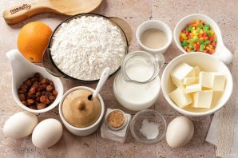
Подготовьте все ингредиенты по списку. Сливочное масло достаньте заранее и дайте полежать при комнатной температуре, чтобы оно стало мягким.
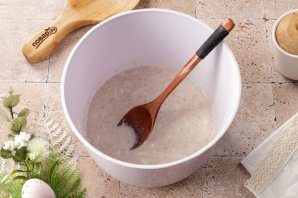
Смешайте дрожжи, тёплое, но не горячее молоко, 3 ст.л. муки из общего количества и 1 ст.л. сахара из общего количества. Перемешайте до однородности, накройте пленкой или полотенцем и оставьте в теплом месте на 20-30 минут.
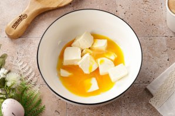
В это время соедините желтки и мягкое сливочное масло.
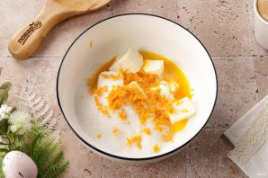
Добавьте сахар, ванилин, соль и цедру апельсина.
Взбейте либо миксером, либо ручным венчиком до состояния пышного крема.
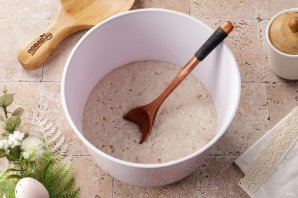
Спустя 20 минут дрожжевая смесь будет выглядеть так: появилась пенная шапочка и вот вот начнёт оседать.
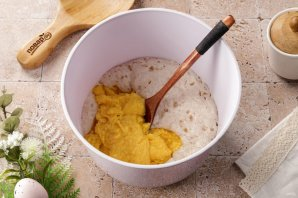
Соедините дрожжевую и масляно-яичную смеси. Перемешайте до однородности.
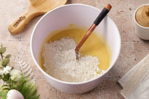
Введите муку. Перемешайте до однородности.
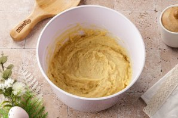
Вот так будет выглядеть тесто.
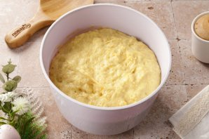
Накройте миску плёнкой и уберите в тёплое место на 1,5-2 часа.
В подошедшее тесто добавьте промытый и обсушенный изюм и цукаты. Изюм можно предварительно обвалять в муке (хватит буквально 1 ч.л. муки).
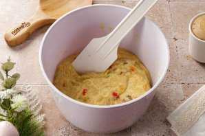
Перемешайте ложкой или лопаткой.
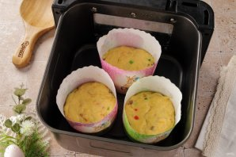
Выложите тесто в формы. У меня обычные формочки для куличей среднего размера, предварительно я их смазала растительным маслом. Поставьте формочки с тестом в чашу аэрогриля, установите температуру 60 градусов и время 25 минут (оставим тесто для расстойки).
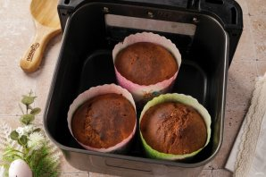
Затем увеличьте температуру до 150 градусов и установите время 30 минут. После звукового сигнала, откройте и при помощи деревянной шпажки проверьте на готовность. Если необходимо подрумянить верх, готовьте при 180 градусах ещё 5-7 минут.
Куличи в аэрогриле готовы. Выложите их на бочок и периодически переворачивая оставьте до остывания.
Остывшие куличи украсьте на свой вкус.
А вот так они выглядят в разрезе. Одни из лучших куличей, что приходилось готовить.
Непременно попробуйте. Приятного аппетита!